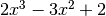
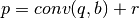
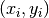

Polinomios¶
En Octave los polinomios se representan por un vector de coeficientes ordenados de la mayor potencia hacia la menor. Por ejemplo, el polinomio  se representa por el vector [2, -3, 0, 2].
Sea p un vector que define los coeficientes de un polinomio. Hay varias funciones para operar con polinomios:
- polyout(p, ‘x’): Expresa el polinomio en términos de la variable x
- y = polyval(p, x): Devuelve el valor del polinomio para el valor x. Si x es un vector o matriz, devuelve un vector o matriz con la evaluación del polinomio p en cada elemento.
- b = conv(p, q): Devuelve el vector de coeficientes que define el polinomio b, producto de los polinomios p y q.
- [b, r] = deconv(p, q): Realiza la división de los polinomios p y q, devolviendo el polinomio cociente b y el polinomio resto r, de forma que se cumple: 
- r = roots(p): Devuelve un vector r con las raices del polinomio p
- d = polyder(p): Devuelve un vector con los coeficientes del polinomio que resulta de derivar p
- s = polyint(p): Devuelve un vector con los coeficientes del polinomio que resulta de integrar p
- p = polyfit(x, y, n): Devuelve el polinomio de grado n que mejor ajusta por mínimos cuadrados el conjuntos de puntos 